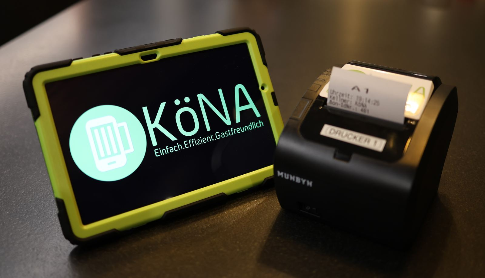

Köna
koena.atMein größtes Projekt und ein bisschen mein zweiter Job. Köna ist das Boniersystem für Vereinsfeste: Bestellt wird am Handy, die Bons kommen sofort an Schank und Küche raus, auch wenn's im Festzelt kein Internet gibt. Ich mache dort so ziemlich alles, vom Code bis zum Kofferpacken.
- Feste seit 2017
- 1.000+
- Orte in Österreich
- 350+
- Maturaprojekt an der HTL Leonding
- 2016
Software
Server und Cloud-Backend, Control Panel, Lizenzverwaltung und der Installer für die Hardware vor Ort.
Hardware
Handys, Bondrucker und Netzwerk bestellen, einrichten und fertig in den Koffer packen.
Vor Ort
Kunden betreuen und auf den Festen dabei sein, wenn's drauf ankommt.
Drumherum
Support, Website, Social Media und alles andere, was halt anfällt.
- Java
- Spring Boot
- Quarkus
- AWS CDK
- Lambda
- DynamoDB
- PostgreSQL
- React